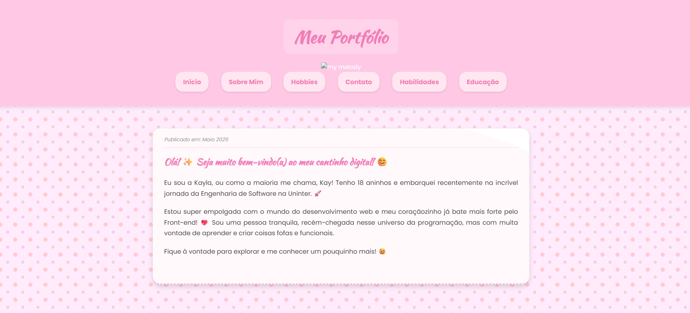
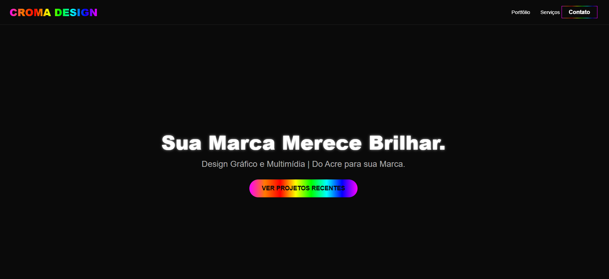

Portifolio Antigo
Segundo site web, desenvolvido para praticar HTML, CSS e JS. O design é simples, mas foi um passo importante para consolidar meus conhecimentos básicos e entender a estrutura de um site completo.
Acessar ProjetoMeu Portifolio
Bem-vindo(a) ao meu espaço digital. Eu sou a Kayla.
Ver ProjetosMinha jornada na tecnologia não começou apenas olhando para telas, mas sim lidando diretamente com o público. Minha experiência prévia em atendimento no varejo e em gráficas me ensinou a habilidade mais valiosa que um desenvolvedor pode ter: a empatia. Entender a dor do cliente me faz pensar na Interação Humano-Computador (IHC) de forma natural na hora de codificar.
Quando decidi mergulhar na tecnologia, busquei caminhos que focassem na aplicação prática e na construção real de soluções, fugindo daquelas abordagens puramente teóricas ou excessivamente matemáticas. É por isso que curso simultaneamente Engenharia de Software e Sistemas para Internet.
Gosto de ver a engrenagem girando, desde a arquitetura da informação até o botão que o usuário clica. Além de dominar HTML, CSS e JavaScript moderno, utilizo meu inglês avançado para consumir documentações originais e estar sempre alinhada com as melhores práticas globais de desenvolvimento web.

Segundo site web, desenvolvido para praticar HTML, CSS e JS. O design é simples, mas foi um passo importante para consolidar meus conhecimentos básicos e entender a estrutura de um site completo.
Acessar Projeto
Desenvolvimento de um site ficticio para uma empresa de design, contendo portfolio e contato.
Acessar ProjetoSeja para discutir uma oportunidade, tecnologia ou boas práticas de IHC.